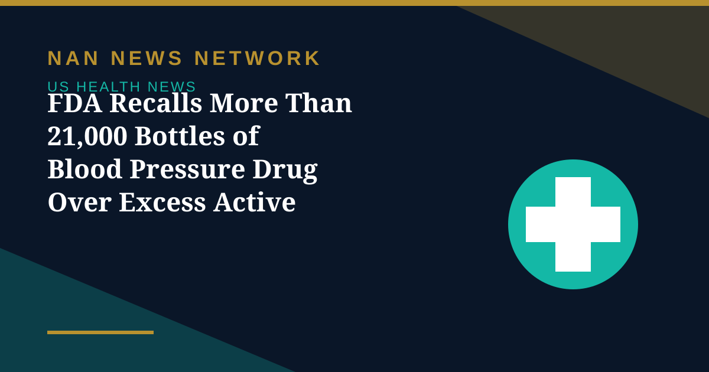

FDA Recalls More Than 21,000 Bottles of Blood Pressure Drug Over Excess Active Ingredient

More than 21,600 bottles of a blood pressure medication have been recalled in the United States after testing found some tablets may contain more of one active ingredient than the label specifies, according to FDA recall records.
Which product is affected
The recall covers telmisartan and amlodipine tablets, 40 mg/5 mg, supplied in 30-count bottles and manufactured for Mylan Pharmaceuticals by Viatris Inc. Five lots are affected: 3228113, 3228114 and 3228115, which expire October 31, 2026, and 3228120 and 3228121, which expire November 30, 2026. The recall was voluntarily initiated on October 1, 2026, and the FDA classified it as Class III, meaning adverse health consequences are considered unlikely.
What patients should do
Patients should check the lot number on their bottle and, if it matches, contact their dispensing pharmacist or prescribing clinician for product-specific guidance. Health experts advise against independently adjusting the dose or abruptly stopping prescribed blood pressure treatment, since sudden discontinuation carries its own risks. The recall does not cover every product containing telmisartan or amlodipine, so confirming the exact strength, bottle size and lot number is essential.
Why excess content matters
Even a Class III recall is a reminder that consistent dosing matters for blood pressure control: too much of an active ingredient can lower blood pressure further than intended, while switching products without guidance can disrupt treatment. Pharmacists can arrange a replacement supply, and patients with questions about symptoms should speak to their clinician promptly.
Sources: FDA recall records, October 2026
More on US Health News
- FDA Declares Trader Joe's Chicken Wrap E. Coli Outbreak Over After 50 People Fell Ill
- FDA Recall: Miyoko's Plant-Based Butter Pulled in 10 States Over E. Coli, Yeast and Mold
- CDC: Drug-Resistant Germs Cause Nearly 9.7 Million US Infections a Year
- CDC Deputy Director Jennifer Shuford to Leave After Midterms, Report Says
- FDA Clears Cullinan's Velinotamig Trial for Autoimmune Blood Disorders
- Regeneron Extends US Ebola Supply Deal Worth About $270 Million Through 2031
- FDA Warns San Francisco Fermented Foods Maker Over Pathogen Risks and Labeling
- Salmonella Oyster Recall Expands: What to Know About the Little Wicomico Outbreak
- Graziers Raw Milk Cheese Recall: 13 Sick, 8 Hospitalized as FDA Issues Class I Warning
- CDC and FDA Performance Ratings Hit All-Time Lows in Gallup Poll